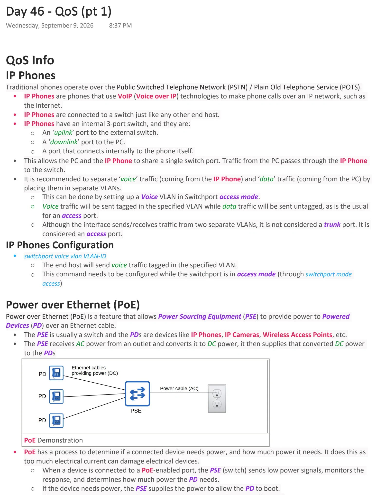
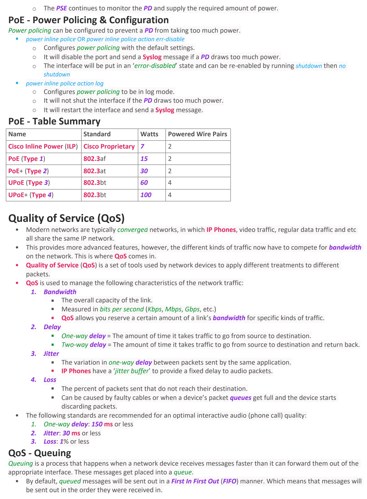
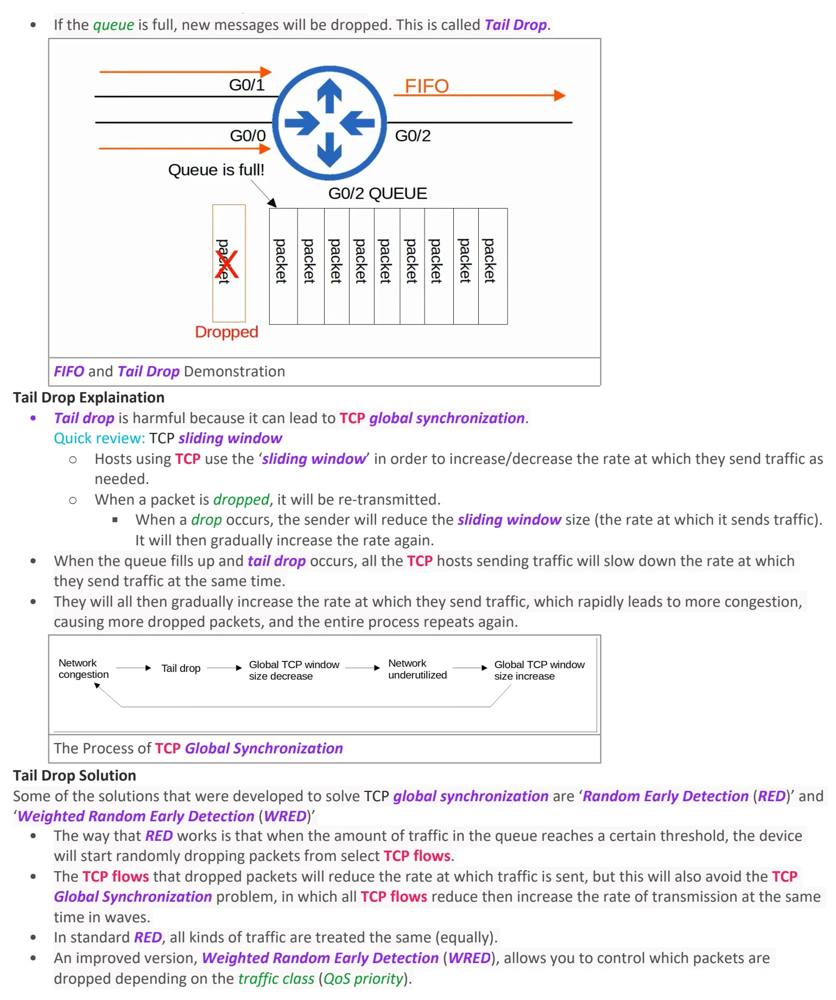

QoS (pt 1)
Download original PDF


Text view — QoS (pt 1)
Extracted from the original export. Diagrams and some formatting appear in the notes above.
Day 46 - QoS (pt 1) Wednesday, September 9, 2026 8:37 PM QoS Info IP Phones Traditional phones operate over the Public Switched Telephone Network (PSTN) / Plain Old Telephone Service (POTS). • IP Phones are phones that use VoIP (Voice over IP) technologies to make phone calls over an IP network, such as the internet. • IP Phones are connected to a switch just like any other end host. • IP Phones have an internal 3-port switch, and they are: ○ An ‘uplink’ port to the external switch. ○ A ‘downlink’ port to the PC. ○ A port that connects internally to the phone itself. • This allows the PC and the IP Phone to share a single switch port. Traffic from the PC passes through the IP Phone to the switch. • It is recommended to separate ‘voice’ traffic (coming from the IP Phone) and ‘data’ traffic (coming from the PC) by placing them in separate VLANs. ○ This can be done by setting up a Voice VLAN in Switchport access mode. ○ Voice traffic will be sent tagged in the specified VLAN while data traffic will be sent untagged, as is the usual for an access port. ○ Although the interface sends/receives traffic from two separate VLANs, it is not considered a trunk port. It is considered an access port. IP Phones Configuration • switchport voice vlan VLAN-ID ○ The end host will send voice traffic tagged in the specified VLAN. ○ This command needs to be configured while the switchport is in access mode (through switchport mode access) Power over Ethernet (PoE) Power over Ethernet (PoE) is a feature that allows Power Sourcing Equipment (PSE) to provide power to Powered Devices (PD) over an Ethernet cable. • The PSE is usually a switch and the PDs are devices like IP Phones, IP Cameras, Wireless Access Points, etc. • The PSE receives AC power from an outlet and converts it to DC power, it then supplies that converted DC power to the PDs PoE Demonstration • PoE has a process to determine if a connected device needs power, and how much power it needs. It does this as too much electrical current can damage electrical devices. ○ When a device is connected to a PoE-enabled port, the PSE (switch) sends low power signals, monitors the response, and determines how much power the PD needs. ○ If the device needs power, the PSE supplies the power to allow the PD to boot. ○ The PSE continues to monitor the PD and supply the required amount of power. PoE - Power Policing & Configuration Power policing can be configured to prevent a PD from taking too much power. • power inline police OR power inline police action err-disable ○ Configures power policing with the default settings. ○ It will disable the port and send a Syslog message if a PD draws too much power. ○ The interface will be put in an ‘error-disabled’ state and can be re-enabled by running shutdown then no shutdown • power inline police action log ○ Configures power policing to be in log mode. ○ It will not shut the interface if the PD draws too much power. ○ It will restart the interface and send a Syslog message. PoE - Table Summary Name Standard Watts Powered Wire Pairs Cisco Inline Power (ILP) Cisco Proprietary 7 2 PoE (Type 1) 802.3af 15 2 PoE+ (Type 2) 802.3at 30 2 UPoE (Type 3) 802.3bt 60 4 UPoE+ (Type 4) 802.3bt 100 4 Quality of Service (QoS) • Modern networks are typically converged networks, in which IP Phones, video traffic, regular data traffic and etc all share the same IP network. • This provides more advanced features, however, the different kinds of traffic now have to compete for bandwidth on the network. This is where QoS comes in. • Quality of Service (QoS) is a set of tools used by network devices to apply different treatments to different packets. • QoS is used to manage the following characteristics of the network traffic: 1. Bandwidth § The overall capacity of the link. § Measured in bits per second (Kbps, Mbps, Gbps, etc.) § QoS allows you reserve a certain amount of a link’s bandwidth for specific kinds of traffic. 2. Delay § One-way delay = The amount of time it takes traffic to go from source to destination. § Two-way delay = The amount of time it takes traffic to go from source to destination and return back. 3. Jitter § The variation in one-way delay between packets sent by the same application. § IP Phones have a ‘jitter buffer’ to provide a fixed delay to audio packets. 4. Loss § The percent of packets sent that do not reach their destination. § Can be caused by faulty cables or when a device’s packet queues get full and the device starts discarding packets. • The following standards are recommended for an optimal interactive audio (phone call) quality: 1. One-way delay: 150 ms or less 2. Jitter: 30 ms or less 3. Loss: 1% or less QoS - Queuing Queuing is a process that happens when a network device receives messages faster than it can forward them out of the appropriate interface. These messages get placed into a queue. • By default, queued messages will be sent out in a First In First Out (FIFO) manner. Which means that messages will be sent out in the order they were received in. • If the queue is full, new messages will be dropped. This is called Tail Drop. FIFO and Tail Drop Demonstration Tail Drop Explaination • Tail drop is harmful because it can lead to TCP global synchronization. Quick review: TCP sliding window ○ Hosts using TCP use the ‘sliding window’ in order to increase/decrease the rate at which they send traffic as needed. ○ When a packet is dropped, it will be re-transmitted. § When a drop occurs, the sender will reduce the sliding window size (the rate at which it sends traffic). It will then gradually increase the rate again. • When the queue fills up and tail drop occurs, all the TCP hosts sending traffic will slow down the rate at which they send traffic at the same time. • They will all then gradually increase the rate at which they send traffic, which rapidly leads to more congestion, causing more dropped packets, and the entire process repeats again. The Process of TCP Global Synchronization Tail Drop Solution Some of the solutions that were developed to solve TCP global synchronization are ‘Random Early Detection (RED)’ and ‘Weighted Random Early Detection (WRED)’ • The way that RED works is that when the amount of traffic in the queue reaches a certain threshold, the device will start randomly dropping packets from select TCP flows. • The TCP flows that dropped packets will reduce the rate at which traffic is sent, but this will also avoid the TCP Global Synchronization problem, in which all TCP flows reduce then increase the rate of transmission at the same time in waves. • In standard RED, all kinds of traffic are treated the same (equally). • An improved version, Weighted Random Early Detection (WRED), allows you to control which packets are dropped depending on the traffic class (QoS priority). Day 46 - QoS (pt 1) Wednesday, September 9, 2026 8:37 PM QoS Info IP Phones Traditional phones operate over the Public Switched Telephone Network (PSTN) / Plain Old Telephone Service (POTS). • IP Phones are phones that use VoIP (Voice over IP) technologies to make phone calls over an IP network, such as the internet. • IP Phones are connected to a switch just like any other end host. • IP Phones have an internal 3-port switch, and they are: ○ An ‘uplink’ port to the external switch. ○ A ‘downlink’ port to the PC. ○ A port that connects internally to the phone itself. • This allows the PC and the IP Phone to share a single switch port. Traffic from the PC passes through the IP Phone to the switch. • It is recommended to separate ‘voice’ traffic (coming from the IP Phone) and ‘data’ traffic (coming from the PC) by placing them in separate VLANs. ○ This can be done by setting up a Voice VLAN in Switchport access mode. ○ Voice traffic will be sent tagged in the specified VLAN while data traffic will be sent untagged, as is the usual for an access port. ○ Although the interface sends/receives traffic from two separate VLANs, it is not considered a trunk port. It is considered an access port. IP Phones Configuration • switchport voice vlan VLAN-ID ○ The end host will send voice traffic tagged in the specified VLAN. ○ This command needs to be configured while the switchport is in access mode (through switchport mode access) Power over Ethernet (PoE) Power over Ethernet (PoE) is a feature that allows Power Sourcing Equipment (PSE) to provide power to Powered Devices (PD) over an Ethernet cable. • The PSE is usually a switch and the PDs are devices like IP Phones, IP Cameras, Wireless Access Points, etc. • The PSE receives AC power from an outlet and converts it to DC power, it then supplies that converted DC power to the PDs PoE Demonstration • PoE has a process to determine if a connected device needs power, and how much power it needs. It does this as too much electrical current can damage electrical devices. ○ When a device is connected to a PoE-enabled port, the PSE (switch) sends low power signals, monitors the response, and determines how much power the PD needs. ○ If the device needs power, the PSE supplies the power to allow the PD to boot. ○ The PSE continues to monitor the PD and supply the required amount of power. PoE - Power Policing & Configuration Power policing can be configured to prevent a PD from taking too much power. • power inline police OR power inline police action err-disable ○ Configures power policing with the default settings. ○ It will disable the port and send a Syslog message if a PD draws too much power. ○ The interface will be put in an ‘error-disabled’ state and can be re-enabled by running shutdown then no shutdown • power inline police action log ○ Configures power policing to be in log mode. ○ It will not shut the interface if the PD draws too much power. ○ It will restart the interface and send a Syslog message. PoE - Table Summary Name Standard Watts Powered Wire Pairs Cisco Inline Power (ILP) Cisco Proprietary 7 2 PoE (Type 1) 802.3af 15 2 PoE+ (Type 2) 802.3at 30 2 UPoE (Type 3) 802.3bt 60 4 UPoE+ (Type 4) 802.3bt 100 4 Quality of Service (QoS) • Modern networks are typically converged networks, in which IP Phones, video traffic, regular data traffic and etc all share the same IP network. • This provides more advanced features, however, the different kinds of traffic now have to compete for bandwidth on the network. This is where QoS comes in. • Quality of Service (QoS) is a set of tools used by network devices to apply different treatments to different packets. • QoS is used to manage the following characteristics of the network traffic: 1. Bandwidth § The overall capacity of the link. § Measured in bits per second (Kbps, Mbps, Gbps, etc.) § QoS allows you reserve a certain amount of a link’s bandwidth for specific kinds of traffic. 2. Delay § One-way delay = The amount of time it takes traffic to go from source to destination. § Two-way delay = The amount of time it takes traffic to go from source to destination and return back. 3. Jitter § The variation in one-way delay between packets sent by the same application. § IP Phones have a ‘jitter buffer’ to provide a fixed delay to audio packets. 4. Loss § The percent of packets sent that do not reach their destination. § Can be caused by faulty cables or when a device’s packet queues get full and the device starts discarding packets. • The following standards are recommended for an optimal interactive audio (phone call) quality: 1. One-way delay: 150 ms or less 2. Jitter: 30 ms or less 3. Loss: 1% or less QoS - Queuing Queuing is a process that happens when a network device receives messages faster than it can forward them out of the appropriate interface. These messages get placed into a queue. • By default, queued messages will be sent out in a First In First Out (FIFO) manner. Which means that messages will be sent out in the order they were received in. • If the queue is full, new messages will be dropped. This is called Tail Drop. FIFO and Tail Drop Demonstration Tail Drop Explaination • Tail drop is harmful because it can lead to TCP global synchronization. Quick review: TCP sliding window ○ Hosts using TCP use the ‘sliding window’ in order to increase/decrease the rate at which they send traffic as needed. ○ When a packet is dropped, it will be re-transmitted. § When a drop occurs, the sender will reduce the sliding window size (the rate at which it sends traffic). It will then gradually increase the rate again. • When the queue fills up and tail drop occurs, all the TCP hosts sending traffic will slow down the rate at which they send traffic at the same time. • They will all then gradually increase the rate at which they send traffic, which rapidly leads to more congestion, causing more dropped packets, and the entire process repeats again. The Process of TCP Global Synchronization Tail Drop Solution Some of the solutions that were developed to solve TCP global synchronization are ‘Random Early Detection (RED)’ and ‘Weighted Random Early Detection (WRED)’ • The way that RED works is that when the amount of traffic in the queue reaches a certain threshold, the device will start randomly dropping packets from select TCP flows. • The TCP flows that dropped packets will reduce the rate at which traffic is sent, but this will also avoid the TCP Global Synchronization problem, in which all TCP flows reduce then increase the rate of transmission at the same time in waves. • In standard RED, all kinds of traffic are treated the same (equally). • An improved version, Weighted Random Early Detection (WRED), allows you to control which packets are dropped depending on the traffic class (QoS priority). Day 46 - QoS (pt 1) Wednesday, September 9, 2026 8:37 PM QoS Info IP Phones Traditional phones operate over the Public Switched Telephone Network (PSTN) / Plain Old Telephone Service (POTS). • IP Phones are phones that use VoIP (Voice over IP) technologies to make phone calls over an IP network, such as the internet. • IP Phones are connected to a switch just like any other end host. • IP Phones have an internal 3-port switch, and they are: ○ An ‘uplink’ port to the external switch. ○ A ‘downlink’ port to the PC. ○ A port that connects internally to the phone itself. • This allows the PC and the IP Phone to share a single switch port. Traffic from the PC passes through the IP Phone to the switch. • It is recommended to separate ‘voice’ traffic (coming from the IP Phone) and ‘data’ traffic (coming from the PC) by placing them in separate VLANs. ○ This can be done by setting up a Voice VLAN in Switchport access mode. ○ Voice traffic will be sent tagged in the specified VLAN while data traffic will be sent untagged, as is the usual for an access port. ○ Although the interface sends/receives traffic from two separate VLANs, it is not considered a trunk port. It is considered an access port. IP Phones Configuration • switchport voice vlan VLAN-ID ○ The end host will send voice traffic tagged in the specified VLAN. ○ This command needs to be configured while the switchport is in access mode (through switchport mode access) Power over Ethernet (PoE) Power over Ethernet (PoE) is a feature that allows Power Sourcing Equipment (PSE) to provide power to Powered Devices (PD) over an Ethernet cable. • The PSE is usually a switch and the PDs are devices like IP Phones, IP Cameras, Wireless Access Points, etc. • The PSE receives AC power from an outlet and converts it to DC power, it then supplies that converted DC power to the PDs PoE Demonstration • PoE has a process to determine if a connected device needs power, and how much power it needs. It does this as too much electrical current can damage electrical devices. ○ When a device is connected to a PoE-enabled port, the PSE (switch) sends low power signals, monitors the response, and determines how much power the PD needs. ○ If the device needs power, the PSE supplies the power to allow the PD to boot. ○ The PSE continues to monitor the PD and supply the required amount of power. PoE - Power Policing & Configuration Power policing can be configured to prevent a PD from taking too much power. • power inline police OR power inline police action err-disable ○ Configures power policing with the default settings. ○ It will disable the port and send a Syslog message if a PD draws too much power. ○ The interface will be put in an ‘error-disabled’ state and can be re-enabled by running shutdown then no shutdown • power inline police action log ○ Configures power policing to be in log mode. ○ It will not shut the interface if the PD draws too much power. ○ It will restart the interface and send a Syslog message. PoE - Table Summary Name Standard Watts Powered Wire Pairs Cisco Inline Power (ILP) Cisco Proprietary 7 2 PoE (Type 1) 802.3af 15 2 PoE+ (Type 2) 802.3at 30 2 UPoE (Type 3) 802.3bt 60 4 UPoE+ (Type 4) 802.3bt 100 4 Quality of Service (QoS) • Modern networks are typically converged networks, in which IP Phones, video traffic, regular data traffic and etc all share the same IP network. • This provides more advanced features, however, the different kinds of traffic now have to compete for bandwidth on the network. This is where QoS comes in. • Quality of Service (QoS) is a set of tools used by network devices to apply different treatments to different packets. • QoS is used to manage the following characteristics of the network traffic: 1. Bandwidth § The overall capacity of the link. § Measured in bits per second (Kbps, Mbps, Gbps, etc.) § QoS allows you reserve a certain amount of a link’s bandwidth for specific kinds of traffic. 2. Delay § One-way delay = The amount of time it takes traffic to go from source to destination. § Two-way delay = The amount of time it takes traffic to go from source to destination and return back. 3. Jitter § The variation in one-way delay between packets sent by the same application. § IP Phones have a ‘jitter buffer’ to provide a fixed delay to audio packets. 4. Loss § The percent of packets sent that do not reach their destination. § Can be caused by faulty cables or when a device’s packet queues get full and the device starts discarding packets. • The following standards are recommended for an optimal interactive audio (phone call) quality: 1. One-way delay: 150 ms or less 2. Jitter: 30 ms or less 3. Loss: 1% or less QoS - Queuing Queuing is a process that happens when a network device receives messages faster than it can forward them out of the appropriate interface. These messages get placed into a queue. • By default, queued messages will be sent out in a First In First Out (FIFO) manner. Which means that messages will be sent out in the order they were received in. • If the queue is full, new messages will be dropped. This is called Tail Drop. FIFO and Tail Drop Demonstration Tail Drop Explaination • Tail drop is harmful because it can lead to TCP global synchronization. Quick review: TCP sliding window ○ Hosts using TCP use the ‘sliding window’ in order to increase/decrease the rate at which they send traffic as needed. ○ When a packet is dropped, it will be re-transmitted. § When a drop occurs, the sender will reduce the sliding window size (the rate at which it sends traffic). It will then gradually increase the rate again. • When the queue fills up and tail drop occurs, all the TCP hosts sending traffic will slow down the rate at which they send traffic at the same time. • They will all then gradually increase the rate at which they send traffic, which rapidly leads to more congestion, causing more dropped packets, and the entire process repeats again. The Process of TCP Global Synchronization Tail Drop Solution Some of the solutions that were developed to solve TCP global synchronization are ‘Random Early Detection (RED)’ and ‘Weighted Random Early Detection (WRED)’ • The way that RED works is that when the amount of traffic in the queue reaches a certain threshold, the device will start randomly dropping packets from select TCP flows. • The TCP flows that dropped packets will reduce the rate at which traffic is sent, but this will also avoid the TCP Global Synchronization problem, in which all TCP flows reduce then increase the rate of transmission at the same time in waves. • In standard RED, all kinds of traffic are treated the same (equally). • An improved version, Weighted Random Early Detection (WRED), allows you to control which packets are dropped depending on the traffic class (QoS priority).